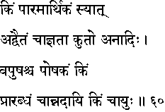
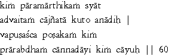

|

|
Verse 60 - Meaning:
Q:What (kim) is really real (paaramaarthikam) ?
A:Non-Duality or Advaitam
Q:How does ignorance (a-jnaata) arise (ca- kuto) in one ?
A:It does not arise since it has always been existing. In other words, it is beginningless or Anaadi.
Q:What (kim) sustains (poshakam) the body (vapusas-ca) ?
A:It is the operative quantum of Karma (Praarabdha Karma)
Q:What (kim-ca) gives us food (anna-daayi) to sustain life ?
A:Longevity or the span of life (caayuh) with which Praarabdha has endowed one.
|